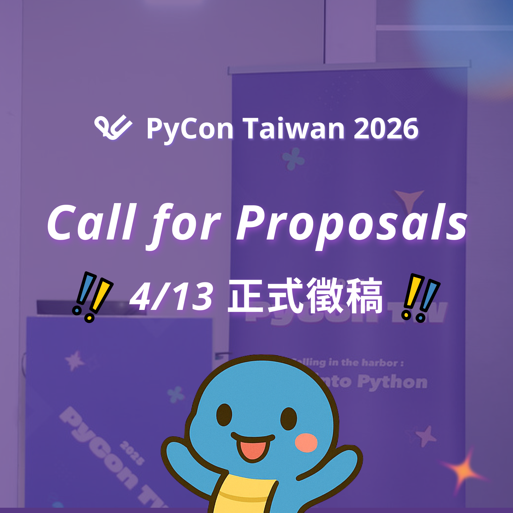
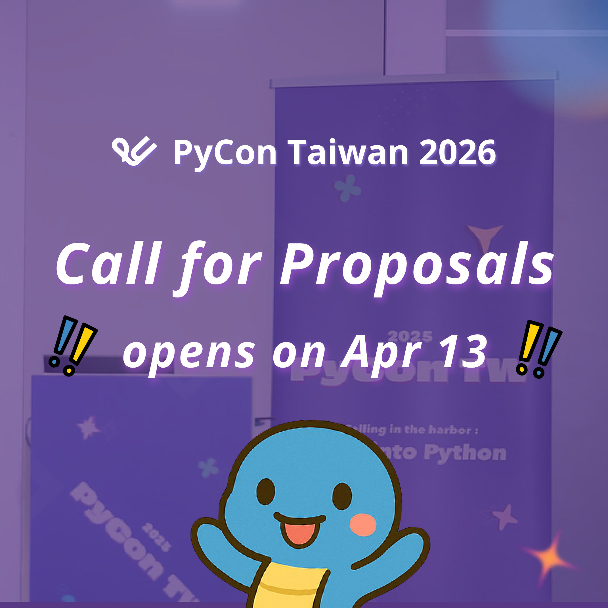

PyCon TW 2026 Call for Proposal (CfP) 即將開跑啦！
Posted on Wed 01 April 2026 in announcement


PyCon TW 2026 Call for Proposal (CfP) 即將開跑啦！🏃♂️
🐴 各位拍粉們，準備好一馬當先、馬力全開直擊時代趨勢的思維了嗎？🐴
PyCon TW 2026 馬上就要在 4/13（一） 開放投稿啦！渴望展現專業與想法的拍粉們，現在就來構思想跟大家分享的講題與課程，站上 PyCon TW 的舞台和全世界的開發者交流吧！🚀
🐍 PyCon TW 2026 稿件募集：https://lihi1.me/D8Y4S
不確定從何開始嗎？可以從近幾年的講題中尋找靈感！🔥
🔻近年講題🔻
💡 PyCon TW 2025：https://lihi1.me/K50dA
💡 PyCon TW 2024：https://lihi1.me/s5hV4
💡 PyCon TW 2023：https://lihi1.me/otVvU
除了投稿，也歡迎喜歡 Python 的拍粉們，一起加入 PyCon TW 2026 團隊，成為志工吧！ 🏃♂️🏃♂️
👉PyCon TW 2026 志工報名表單：https://lihi1.me/n3GNq
PyCon TW 2026 Call for Proposals (CfP) is opening soon! 🏃♂️
Hey Pythonistas, are you ready to gallop into the Year of the Horse and ride the wave of new ideas? 🐴
PyCon TW 2026 Call for Proposals opens on 4/13 (Mon)! If you’re ready to share your expertise, spark new conversations, and connect with developers from around the world, now’s the perfect time to start shaping your talk or tutorial for the PyCon TW 2026 stage! 🚀
🐍 PyCon TW 2026 CfP: https://lihi1.me/D8Y4S
Not sure where to start? Take a look at talks from the past few years and get inspired! 🔥
🔻 Past Talks 🔻
💡 PyCon TW 2025: https://lihi1.me/K50dA
💡 PyCon TW 2024: https://lihi1.me/s5hV4
💡 PyCon TW 2023: https://lihi1.me/otVvU
Want to join the action beyond speaking? We’d also love to welcome you to the PyCon TW 2026 team as a volunteer! 🏃♂️🏃♀️
👉 PyCon TW 2026 Volunteer Sign-up: https://lihi1.me/n3GNq